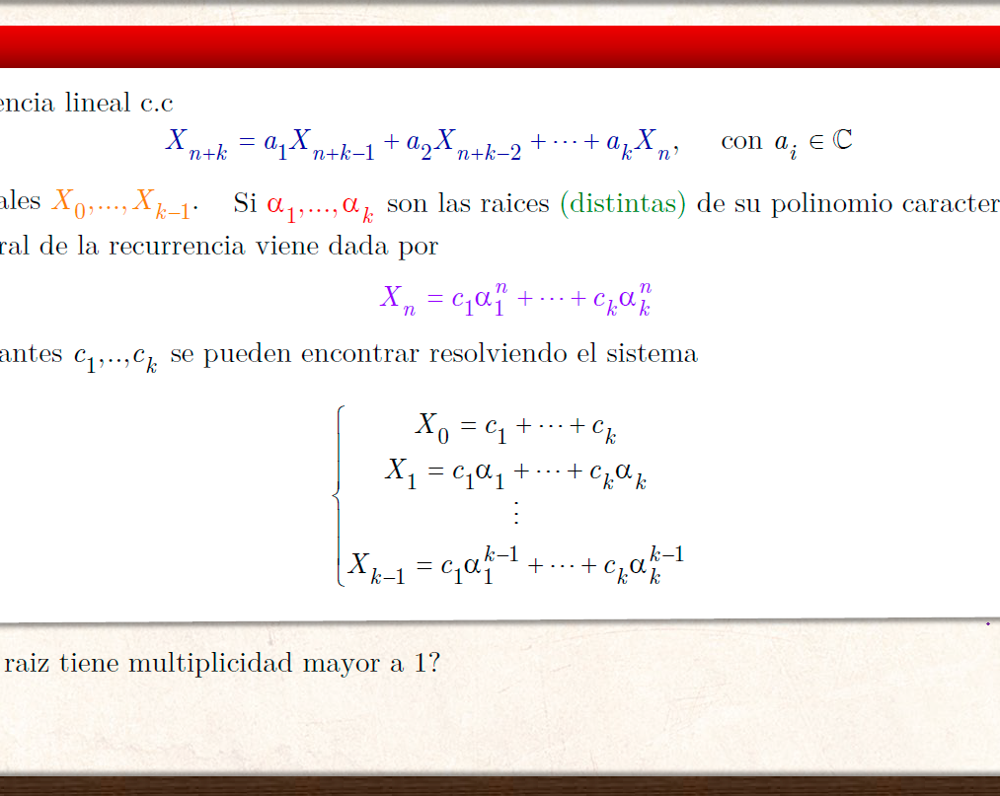

Ecuación General de Recurrencias lineales con coeficientes constantes
Principles of Combinatorics • (2023-2)
This talk provides a structured introduction to Linear Recurrence Relations with Constant Coefficients. We begin by formalizing the definition of such sequences and characterizing the set of solutions for homogeneous recurrences as a vector space over \(\mathbb{C}\). Two analytical methods for finding the general formula are presented: the Linear Method, which utilizes the roots of the characteristic equation—accounting for algebraic multiplicity —and the Series Method, which applies ordinary generating functions and partial fraction decomposition to solve both homogeneous and non-homogeneous systems.
View Slides
Watch Video
